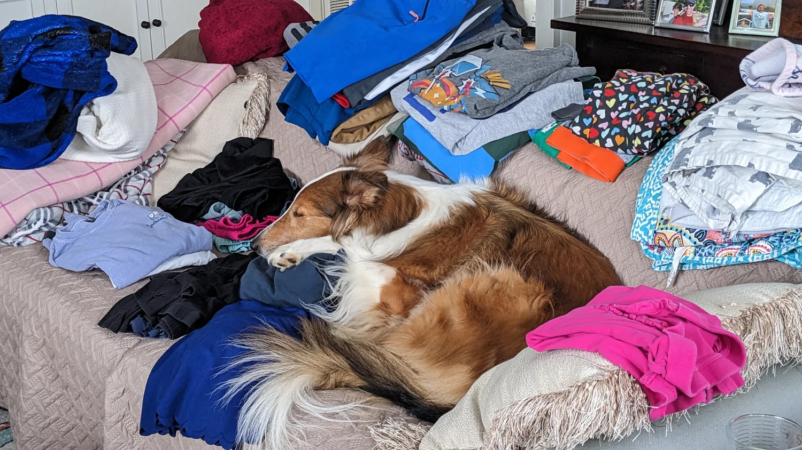
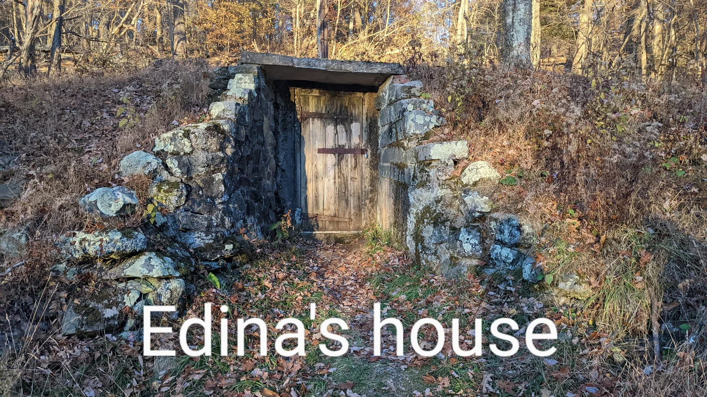

Characters
Edina
A beloved camp resident with a misleadingly evil name.
About
Edina is related to Slim and lives at the Derelict Camp. The E in her name is said to stand for “evil,” but her actual interests are much gentler: staying indoors and sleeping, especially on couches.
Gallery


KEEP EXPLORING